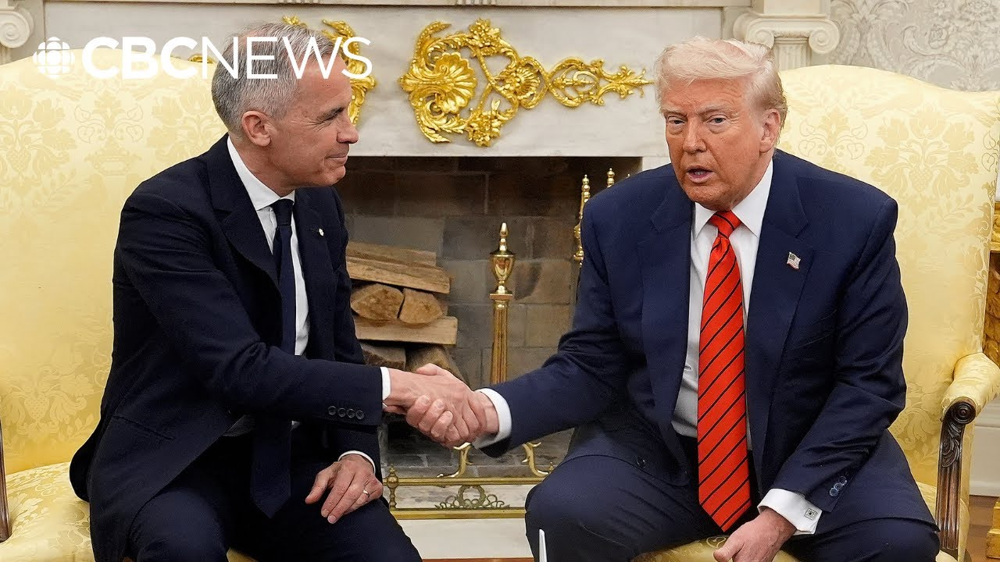

【卡尼与特朗普直接商讨结束贸易战，CBC新闻证实】
Summary: CBC News confirms direct discussions between Prime Minister Mark Carney and US President Donald Trump on trade war resolution, with Canada seeking a deal before the G7 summit amid escalating tariffs and industry demands for government support.
摘要： CBC新闻证实加拿大总理马克·卡尼与美国总统特朗普就解决贸易战进行了直接讨论，加拿大希望在G7峰会前达成协议，同时应对不断升级的关税问题，行业要求政府提供支持。

⏱️ Estimated Reading Time: 7 min
📚 高考3500生词 📚 雅思生词 📚 托福生词 📚 GRE生词 📚 UP主推荐生词
CBC News has confirmed new information about Ottawa's trade talks with the US.
CBC新闻证实了关于渥太华与美国贸易谈判的新信息。
Talks that Mark Carney has called intensive.
马克·卡尼称这些谈判是密集的。
The CBC's Karina Roman joins me live.
CBC的卡琳娜·罗曼正在现场与我连线。
So Karina, what have we learned?
那么卡琳娜，我们了解到什么？
Well, we've learned from sources familiar with those intensive talks, that there have been direct discussions between Prime Minister Mark Carney and US President Donald Trump since his visit uh to the Oval Office.
我们从熟悉这些密集谈判的消息来源获悉，自马克·卡尼总理访问白宫以来，他与美国总统唐纳德·特朗普进行了直接讨论。
in fact that there have been a few phone calls in the evenings and exchanged text messages about the trade talks since that meeting uh in Washington.
事实上，自华盛顿会晤以来，双方在晚间进行了几次电话交谈，并交换了关于贸易谈判的短信。
So, it's not just been senior officials from both uh countries meeting.
因此，不仅仅是两国的高级官员在会晤。
It's been at the very top those discussions and that speaks to how much Ottawa wants some kind of deal at least on tariffs uh before the G7 which is only two weeks away and which Canada is hosting and this is something of course that was asked of industry minister Melania Lee today.
这些讨论是在最高层进行的，这表明渥太华多么希望在距离仅有两周且由加拿大主办的G7峰会前至少就关税问题达成某种协议，这也是今天向工业部长梅拉妮·李提出的问题。
Here's what she had to say.
以下是她的回应。
First of all, this is a trade war.
首先，这是一场贸易战。
So it's perfectly normal that as that trade war is progressing that there be diplomatic discussions between Prime Minister Carney and President Trump.
因此，随着贸易战的进展，卡尼总理与特朗普总统进行外交讨论是完全正常的。
Uh they are talking having said that I can also say that we mustn't be naive.
他们在交谈，但我也必须说我们不能天真。
We have to continue protect ourselves and support our own workers right now.
我们现在必须继续保护自己并支持我们的工人。
And we're clearly seeing that the 50% tariff is an escalation against all countries that produce steel and aluminum.
我们清楚地看到，50%的关税是对所有生产钢铁和铝的国家的升级行动。
Now, there's been some speculation that because of the sensitivity and the high level of these talks, that's what's behind what some people characterize as a hesitation by the government to hit back right away against these 50% tariffs from the US with our own uh escalation to 50% tariffs on US steel and aluminum.
目前有一些猜测认为，由于这些谈判的敏感性和高层性质，这解释了为什么一些人认为政府在立即反击美国的50%关税时犹豫不决，没有立即对美国的钢铁和铝征收50%的关税。
Um and yet uh you have people including those who represent the steel industry and their workers here in Ottawa meeting with ministers and MPs pushing for such retaliation wanting uh Canada to up the ante to match those tariffs to 50% and also additional tariffs on countries that engage in unfair trade.
然而，包括代表钢铁行业及其工人的一些人在渥太华与部长和议员会面，推动此类报复措施，希望加拿大将关税提高到50%，并对从事不公平贸易的国家征收额外关税。
uh those places like China who are accused of dumping uh cheap steel uh into Canada and into the US.
比如被指控向加拿大和美国倾销廉价钢铁的中国等地。
Uh Ontario Premier Doug Ford supporting that immediate retaliation or at least not waiting too long for uh making that kind of action.
安大略省省长道格·福特支持立即报复，或至少不要等待太久才采取此类行动。
Have a listen to what he had to say.
听听他的说法。
The ideal situation is to get a deal and if that deal does not happen in the next uh few days then we have to slap another 25% tariff on top of the existing 25 25% tariff on our aluminum steel and of course the steel industry saying that you know even if there is a deal uh with Donald Trump can it really be trusted?
理想情况是达成协议，如果未来几天无法达成协议，那么我们必须在现有的25%关税基础上再征收25%的关税，当然钢铁行业表示，即使与特朗普达成协议，真的能信任吗？
uh everyone knowing and including Doug Ford in that scrum saying, you know, Donald Trump could wake up the next day and change his mind.
包括道格·福特在内的所有人都知道，特朗普可能第二天醒来就改变主意。
And so Canada has to do what it can do uh regardless of what's happening in terms of those intensive talks.
因此，加拿大必须尽其所能，无论这些密集谈判的结果如何。
And excuse me, Karina, in addition to retaliation, the steel and aluminum industry is also looking for support from the government.
抱歉，卡琳娜，除了报复措施，钢铁和铝行业也在寻求政府的支持。
What are they looking for exactly?
他们具体在寻求什么？
Well, they're obviously pleased to hear and they've said this that there is now all this talk about onshoring using domestic supply of aluminum and steel uh in these new nation building projects that keep getting talked about or uh when we want to invest more in defense and and new defense procurement.
他们显然很高兴听到并提到，现在有很多关于在这些新的国家建设项目中使用国内供应的钢铁和铝的讨论，或者当我们希望增加国防投资和新国防采购时。
But those are not immediate solutions.
但这些不是立即的解决方案。
Those are not now supports which are needed for jobs that are could be lost within days if not weeks uh because of these ownorous tariffs.
这些不是现在需要的支持，因为由于这些繁重的关税，工作岗位可能在几天甚至几周内流失。
Um and so with the prime minister repeatedly saying that all the revenue from Canada's retaliatory tariffs and counter tariffs would go towards supporting these industries and the workers in those industries that are most affected.
总理多次表示，加拿大报复性关税和反关税的所有收入将用于支持这些行业和受影响最严重的工人。
Lots of questions about how that would work and is that money going to flow soon and if so what's the criteria for it flowing and not really getting answers back at least not today from Melanie Jolene nor in question period with the opposition asking about that.
关于这笔钱如何运作、是否会很快发放以及发放标准是什么，有很多问题，但至少今天没有得到梅拉妮·乔琳的回应，反对党在质询期间也提出了这些问题。
Uh so perhaps the the the steel companies who are meeting with the ministers and the MPs might get some clarity on that, but at this point uh Canadians still don't know how that money uh is going to be used to support those industries and those industries saying they need it quickly.
也许与部长和议员会面的钢铁公司可能会得到一些澄清，但目前加拿大人仍然不知道这笔钱将如何用于支持这些行业，而这些行业表示他们急需这笔钱。
Karina, thank you.
卡琳娜，谢谢。
The CBC's Karina Roman live in Ottawa.
CBC的卡琳娜·罗曼在渥太华现场报道。